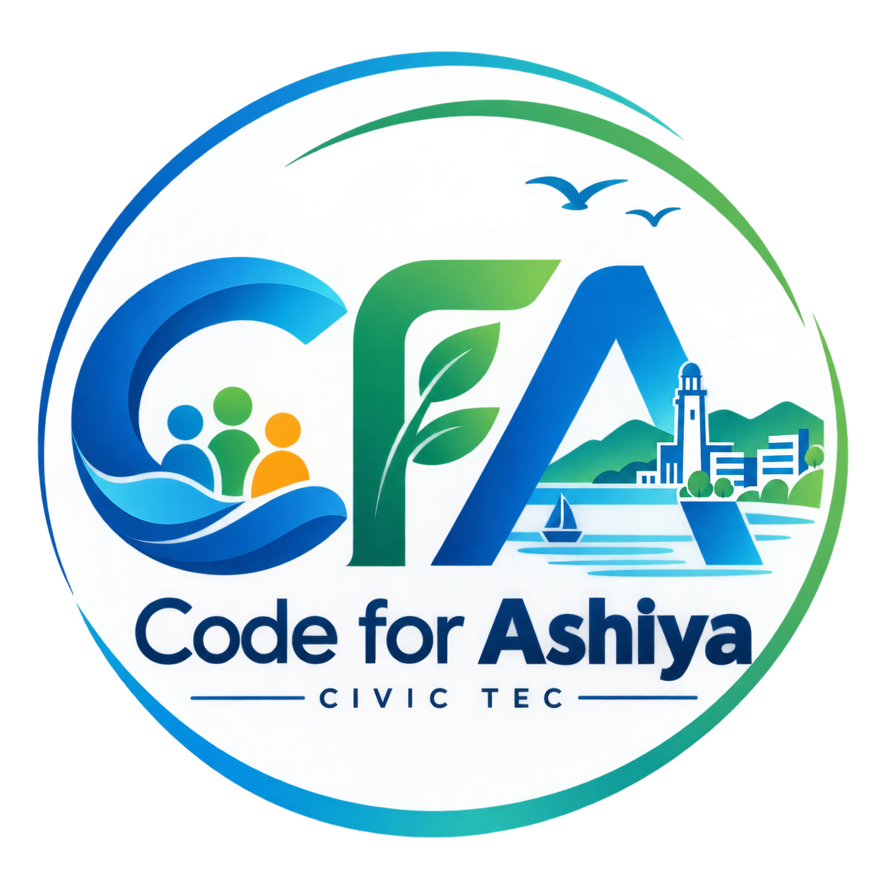

多様な市民の声を活かす、新しい意思決定の仕組みを創る。音声認識とAIで「誰も取り残さず」に「まとまった民意の塊」を可視化し、市民と行政が共に歩む、共創のためのインフラです。
Code for Ashiya が掲げる根本理念と、私たちが目指すオープンな未来への招待状。
私たちが生きるこの社会、そして身近な地域には、人口減少、高齢化、行政プロセスの限界、そして住民間の分断や対話の不足など、無数の課題が存在しています。これまで、こうした課題の多くは行政主導（トップダウン）で解決されることが前提となってきました。しかし、複雑化する現代において、行政単体での解決には限界があり、また住民の声が十分に届かない構造的な課題が生まれています。
私たちはこの現状に甘んじることなく、デジタルやAIをはじめとする先進的なテクノロジーを駆使し、市民の側から社会課題を解決するために「Code for Ashiya」を立ち上げました。
私たちが最初に取り組んでいる山手町の自治会活動や芦屋市の諸課題（未来会議、人口問題、子育て、公共施設再編など）における実証実験は、極めて重要なユースケースの一つに過ぎません。
音声認識やAIを活用して「誰も取り残さず」に「まとまった民意の塊」を可視化し、市民と行政が共に歩む共創のインフラを創る——。この取り組みをモデルケースとしながら、地域や芦屋市という枠組みだけに留まらず、デジタル・AIテクノロジーの力であらゆる社会課題を解決し、民主主義のOSをアップデートしていく集団でありたいと考えています。
このビジョンは、少数の開発者や行政だけで成し遂げられるものではありません。プログラミングのスキルがあるかどうかも問いません。
地域の課題をデジタルやAIで形に
ボトムアップの民主主義を設計
自分のアイデアで未来に参加
そんな熱意と志を持つすべての人に、私たちの門戸は開かれています。一人ひとりの小さな意志と協力が集まることでしか、社会の構造を動かすことはできません。ぜひ、このオープンな挑戦に参加してください。あなたのひと声と一歩が、未来の民主主義をハックする力になります。
Code for Ashiya 創設者・運営一同
License: MIT / Open Source & Public Infrastructure
お上主導から市民主導へ。民主主義の最小単位から変革を起こす。
パブリックコメントや従来のアンケートでは、せっかくの貴重な市民の意見が十分に集約されず、行政と市民の対話の機会が限られていました。
自治会は高齢化・役員不足・新住民の孤立に直面。声の大きい人の利益誘導や不満の吐き溜めになり、本来の合意形成が機能不全に陥っています。
生活課題をデータ化し、行政・議会と対等に交渉するためのOS（合意形成の仕組み）がこれまでの社会に存在していませんでした。
行政任せのトップダウンではなく、市民一人ひとりの声がしっかりと反映されるボトムアップの仕組みが必要です。民主主義の最小単位である「自治会」から、住民全員の声をAIで美しく構造化し、みんなでより良い地域をつくるための「共通の土台」を作りたい——そんな想いから生まれたのが community-association です。
誰も取り残さず、感情的な不満を政策レベルのデータへ昇華する
スマホに向かって話すだけで投稿。デジタルが苦手な高齢者、集会に出られない子育て世代、これまで沈黙を強いられてきたサイレントマジョリティを徹底的にすくい上げます。
AIが断片的な声を多角的に分析。類似テーマをリアルタイム統合し、感情的な不満を「行政が無視できないロジックツリー」へ昇華。5視点（核心・変化・成功事例・懸念点・問い）で自動要約します。
バラバラだった地域の声が自治会単位で美しく束ねられ可視化されることで、行政の縦割りや予算の壁を越え、議員や市民が建設的な対話と政策共創を行うための信頼性の高いデータとなります。
地区町内会向け2つ ＋ 芦屋市の課題7つ。
すべて無償公開。スマホから参加でき、AIがリアルタイムに統合。
山手町をベースにした自治会の声を集約・構造化するベースOS。5つのテーマ×中分類で自動整理、音声入力対応。住民発案で新テーマを生成できる民主主義の最小実行単位。
甲南高校などの生徒と地域住民が世代を超えてつながるプラットフォーム。通学路の安全、放課後の居場所、10年後の街の未来像をスマホから自由に語り合えます。
緑と景観を大切に、どんな街にしたいか。芦屋の未来像を描く
人口減少と高齢化。10年後を支える仕組みを考える
日々の困りごとから市政要望まで、総合窓口として
広報誌・LINE・HPのあり方を市民目線で再設計
待機児童や保育の質。子育て世代の声を政策へ
駅前公共施設再編計画を、市民の手で問い直す
市議会議員と市民が直接つながる、政策対話の場
思いついたまま自由記述。設問なし。音声入力OK。
スマホに向かって話すだけ。形式は不要。高齢者も高校生も、感じたことをそのまま思いついたまま自由記述。
AIが5つの視点（核心・変化・成功事例・懸念点・問い）で分析し、要約・タイトル・テーマを自動生成。類似投稿はリアルタイム検出。
同じテーマは既存の統合記事へマージ。元記事は履歴として保存。3件たまると新中分類を自動生成。
音声認識でデジタルが苦手な方も参加。山手町の高齢者から甲南高校の生徒まで同じテーブルに。
感情的な不満が、AIの多角分析によりロジックに裏打ちされた地域課題ツリーへ昇華。
丁寧に束ねられた確かな民意は、行政と市民が共に地域の未来をデザインする力強い指針に。
スキルや経験は問いません。草の根の民主主義をボトムアップで再定義するための実験に参加しませんか？
矢野 昭二
shoji.yano@gmail.com
芦屋市在住。個人開発からCode for Ashiyaへ移行し、公益性・中立性・透明性を担保。草の根の民主主義をボトムアップで再定義中。
Code for Ashiya
MIT License / 無償公開
公益性・中立性・公平性・透明性を担保したパブリックなシビックテックインフラ。全国の自治会・町内会・教育現場へ横展開。